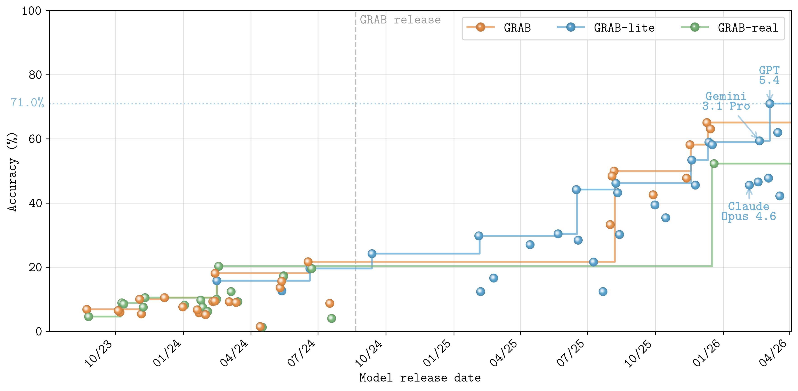
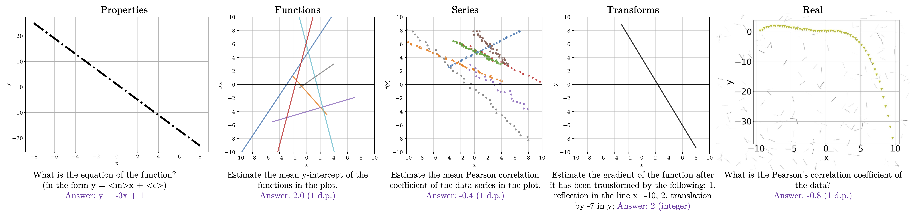
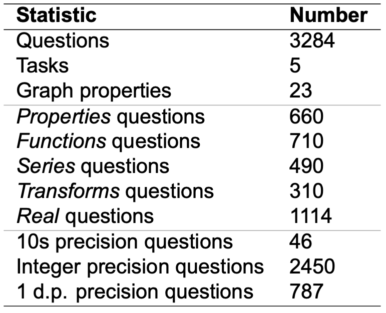
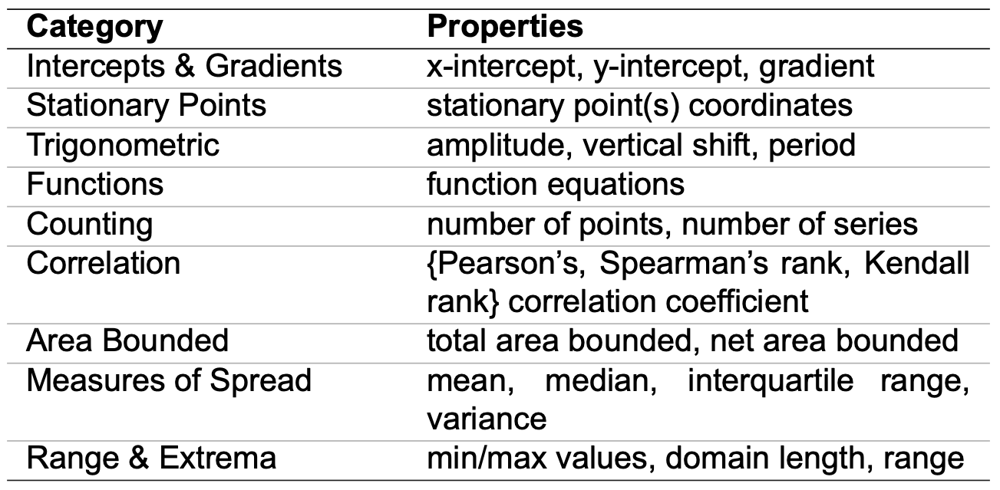
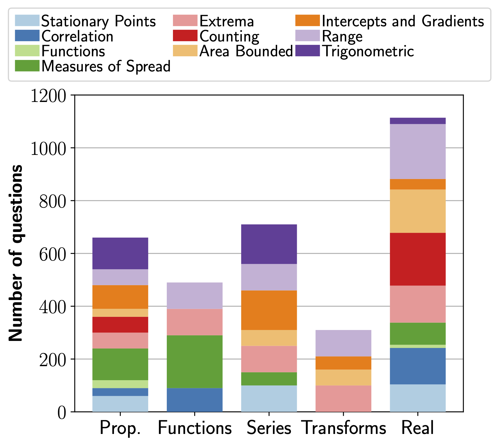
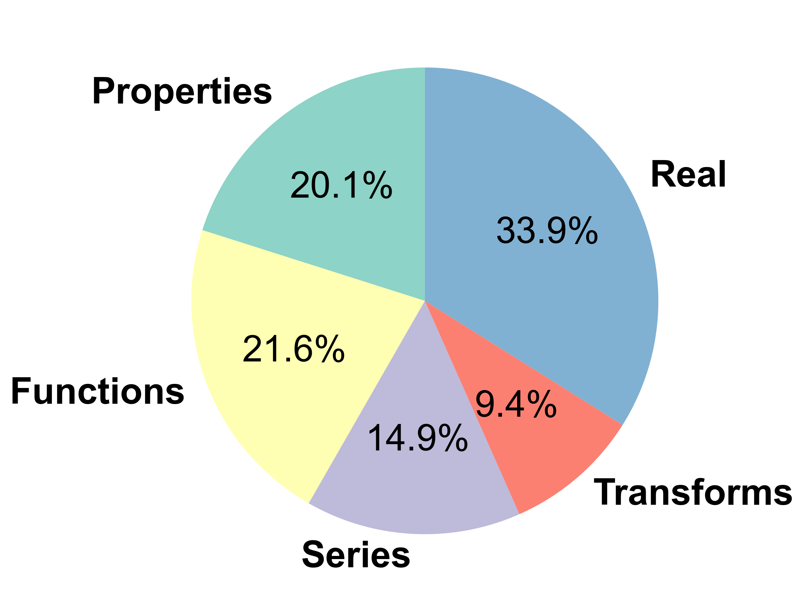
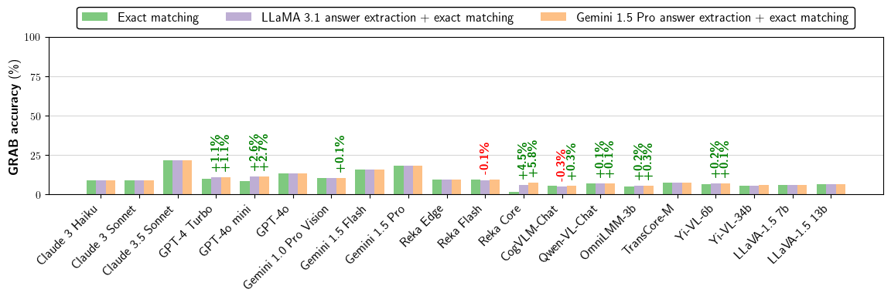

GRAB SOTA over time. Overall accuracy on GRAB, GRAB-lite, and GRAB-real plotted against model release date.
Overview
Large multimodal models (LMMs) have exhibited proficiences across many visual tasks. Although numerous benchmarks exist to evaluate model performance, they increasing have insufficient headroom and are unfit to evaluate the next generation of frontier LMMs.
To overcome this, we present GRAB, a challenging 2170-question benchmark focused on the tasks human analysts might typically perform when interpreting figures. Such tasks include estimating the mean, intercepts or correlations of functions and data series and performing transforms. We evaluate an initial suite of 20 LMMs on GRAB via exact matching, finding it to be a challenging benchmark, with the current best model scoring just 21.7%.
To complement the main GRAB benchmark, which is constructed from synthetic figures, we also introduce GRAB-real, a 1114-question set of more realistic figures organised into 4 tasks: paper sketches, whiteboard sketches, figures embedded in computer environments and figures with added noise.
Focused on the recent development of reasoning models, we also introduce GRAB-lite, a light-weight task-balanced 500-question subset of GRAB and GRAB-real, and evaluate leading frontier LMMs on it.
Leaderboards
| Rank | Model | Properties | Functions | Series | Transforms | Overall |
| GPT-5.2 | 75.6 | 64.5 | 48.4 | 70.6 | 65.1 | |
| GPT-5.1 | 66.8 | 38.0 | 32.7 | 53.9 | 47.8 | |
| GPT-5-nano | 48.3 | 26.2 | 25.1 | 30.3 | 33.3 | |
| GPT-5-mini | 65.0 | 38.7 | 36.1 | 54.5 | 48.4 | |
| GPT-5 | 66.8 | 41.1 | 35.5 | 57.4 | 50.0 | |
| Gemini 3 Pro | 69.8 | 54.9 | 46.7 | 58.7 | 58.2 | |
| Gemini 3 Flash | 76.4 | 58.7 | 48.4 | 68.4 | 63.1 | |
| Claude 4.5 Sonnet | 56.5 | 34.1 | 36.7 | 41.6 | 42.6 | |
| Claude 3.5 Sonnet | 41.8 | 15.5 | 11.0 | 10.0 | 21.7 | |
| Gemini 1.5 Pro | 34.2 | 11.4 | 13.3 | 6.5 | 18.1 | |
| Gemini 1.5 Flash | 28.5 | 11.5 | 8.4 | 9.0 | 15.6 | |
| GPT-4o | 24.7 | 10.8 | 9.2 | 3.5 | 13.6 | |
| Claude 3 Sonnet | 15.3 | 8.6 | 4.5 | 4.8 | 9.2 | |
| Reka Flash | 13.2 | 10.1 | 6.3 | 3.9 | 9.3 | |
| GPT-4 Turbo | 18.5 | 8.5 | 4.9 | 3.5 | 10.0 | |
| Claude 3 Haiku | 14.2 | 6.6 | 8.8 | 3.9 | 9.0 | |
| TransCore-M | 7.9 | 9.2 | 7.6 | 3.9 | 7.6 | |
| Yi-VL-6b | 5.6 | 8.6 | 7.1 | 4.2 | 6.7 | |
| LLaVA-1.5 13b | 5.0 | 7.7 | 8.4 | 3.9 | 6.5 | |
| CogVLM-Chat | 7.0 | 4.9 | 5.1 | 3.9 | 5.4 | |
| GPT-4o mini | 15.8 | 6.8 | 5.7 | 2.9 | 8.7 | |
| LLaVA-1.5 7b | 4.7 | 7.5 | 6.5 | 4.8 | 6.0 | |
| Yi-VL-34b | 7.6 | 5.9 | 5.5 | 2.3 | 5.8 | |
| Qwen-VL-Chat | 10.2 | 6.6 | 5.1 | 2.9 | 6.8 | |
| OmniLMM-3b | 6.7 | 4.9 | 4.1 | 4.5 | 5.2 | |
| Reka Core | 1.7 | 0.0 | 4.3 | 0.3 | 1.5 | |
| — | Gemini 1.0 Pro Vision | 20.2 | 5.8 | 6.9 | 6.1 | 10.5 |
| — | Reka Edge | 11.8 | 8.7 | 11.6 | 1.9 | 9.4 |
🎉 To add your GRAB results, please contact this email.
| Rank | Model | Real |
| Gemini 3 Flash | 52.3 | |
| Gemini 1.5 Pro | 20.3 | |
| Claude 3.5 Sonnet | 19.6 | |
| GPT-4o | 17.3 | |
| Gemini 1.5 Flash | 17.1 | |
| Claude 3 Sonnet | 12.4 | |
| Reka Flash | 10.0 | |
| Yi-VL-6b | 9.7 | |
| Claude 3 Haiku | 9.2 | |
| LLaVA-1.5 13b | 8.9 | |
| LLaVA-1.5 7b | 8.5 | |
| TransCore-M | 8.2 | |
| GPT-4 Turbo | 7.5 | |
| Yi-VL-34b | 7.5 | |
| CogVLM-Chat | 10.5 | |
| OmniLMM-3b | 6.2 | |
| Qwen-VL-Chat | 4.6 | |
| GPT-4o mini | 4.0 | |
| Reka Core | 1.3 |
🎉 To add your GRAB results, please contact this email.
| Rank | Model | Properties | Functions | Series | Transforms | Real | Overall |
| Claude Fable 5 | 79.0 | 78.0 | 59.0 | 81.0 | 73.0 | 74.0 | |
| GPT-5.5 | 82.0 | 79.0 | 55.0 | 82.0 | 61.0 | 71.8 | |
| GPT-5.4 | 82.0 | 77.0 | 61.0 | 75.0 | 60.0 | 71.0 | |
| Gemini 3.5 Flash | 75.0 | 67.0 | 42.0 | 70.0 | 61.0 | 63.0 | |
| GPT-5.4 mini | 69.0 | 67.0 | 54.0 | 74.0 | 46.0 | 62.0 | |
| Claude Opus 4.8 | 67.0 | 58.0 | 47.0 | 76.0 | 55.0 | 60.6 | |
| Gemini 3.1 Pro | 72.0 | 54.0 | 51.0 | 68.0 | 52.0 | 59.4 | |
| Gemini 3 Pro | 64.0 | 54.0 | 41.0 | 61.0 | 47.0 | 53.4 | |
| Gemini 3 Flash | 68.0 | 60.0 | 37.0 | 68.0 | 58.0 | 58.2 | |
| Claude Opus 4.7 | 63.0 | 56.0 | 49.0 | 77.0 | 46.0 | 58.2 | |
| GPT-5.2 | 63.0 | 59.0 | 49.0 | 76.0 | 48.0 | 59.0 | |
| Gemini 3.1 Flash Lite | 53.0 | 45.0 | 42.0 | 56.0 | 43.0 | 47.8 | |
| Claude Sonnet 4.6 | 51.0 | 41.0 | 45.0 | 62.0 | 34.0 | 46.6 | |
| Claude Opus 4.5 | 53.0 | 43.0 | 35.0 | 63.0 | 34.0 | 45.6 | |
| Claude Opus 4.6 | 53.0 | 44.0 | 41.0 | 58.0 | 32.0 | 45.6 | |
| GPT-5 | 59.0 | 34.0 | 33.0 | 63.0 | 42.0 | 46.2 | |
| GPT-5.1 | 56.0 | 45.0 | 30.0 | 59.0 | 32.0 | 44.4 | |
| Gemini 2.5 Pro | 54.0 | 43.0 | 31.0 | 55.0 | 38.0 | 44.2 | |
| GPT-5 mini | 55.0 | 40.0 | 32.0 | 56.0 | 33.0 | 43.2 | |
| GPT-5.4 nano | 44.0 | 39.0 | 38.0 | 54.0 | 36.0 | 42.2 | |
| o3 | 46.0 | 38.0 | 33.0 | 50.0 | 37.0 | 40.8 | |
| Claude Sonnet 4.5 | 47.0 | 34.0 | 39.0 | 48.0 | 29.0 | 39.4 | |
| Claude Haiku 4.5 | 41.0 | 31.0 | 33.0 | 46.0 | 26.0 | 35.4 | |
| Claude Sonnet 4 | 37.0 | 31.0 | 31.0 | 29.0 | 24.0 | 30.4 | |
| GPT-5 nano | 36.0 | 34.0 | 29.0 | 33.0 | 19.0 | 30.2 | |
| Gemini 2.0 Flash | 41.0 | 25.0 | 18.0 | 37.0 | 28.0 | 29.8 | |
| Gemini 2.5 Flash | 34.0 | 27.0 | 29.0 | 22.0 | 30.0 | 28.4 | |
| GPT-4.1 | 34.0 | 23.0 | 27.0 | 25.0 | 28.0 | 27.4 | |
| o1 | 27.0 | 15.0 | 28.0 | 26.0 | 25.0 | 24.2 | |
| Grok 4 | 23.0 | 15.0 | 28.0 | 22.0 | 20.0 | 21.6 | |
| Claude 3.5 Sonnet | 39.0 | 15.0 | 11.0 | 13.0 | 20.0 | 19.6 | |
| GPT-4.1 mini | 23.0 | 9.0 | 12.0 | 19.0 | 30.0 | 18.6 | |
| Claude 3.7 Sonnet | 36.0 | 13.0 | 13.0 | 11.0 | 10.0 | 16.6 | |
| Gemini 1.5 Pro | 23.0 | 10.0 | 14.0 | 7.0 | 25.0 | 15.8 | |
| GPT-4o | 21.0 | 7.0 | 10.0 | 6.0 | 19.0 | 12.6 | |
| Gemini 2.5 Flash Lite | 18.0 | 5.0 | 11.0 | 18.0 | 10.0 | 12.4 | |
| Gemini 2.0 Flash Lite | 14.0 | 13.0 | 9.0 | 14.0 | 12.0 | 12.4 | |
| GPT-4o mini | 12.0 | 5.0 | 17.0 | 11.0 | 12.0 | 11.4 |
🎉 To add your GRAB-Lite results, please contact this email.
GRAB, GRAB-real and GRAB-lite datasets
The GRAB benchmark suite evaluates the graph analysis capabilities of large multimodal models through questions that mirror tasks human analysts typically perform when interpreting figures. These tasks include estimating means, intercepts, correlations of functions and data series, and performing transforms. The core task categories are:
- Properties focuses on the analysis of features of individual functions and series
- Functions requires computing the mean of properties across multiple functions
- Series requires computing the mean of properties across multiple series
- Transforms involves determining the properties of a function after it has undergone a series of transforms
GRAB
The main benchmark consisting of 2,170 questions centered around high-quality synthetic graphs, spanning 23 different graph properties.
GRAB-real
A 1,114-question set featuring more realistic figures organised into 4 sub-tasks: paper sketches, whiteboard sketches, figures embedded in computer environments, and figures with added noise.
GRAB-lite
A lightweight, task-balanced 500-question subset combining questions from both GRAB and GRAB-real, with 100 questions from each of the five task categories (Properties, Functions, Series, Transforms, and Real).

Examples of each GRAB task: Properties, Functions, Series, Transforms, and Real

Overview statistics

GRAB properties and categories

Distribution of required property per task

Distribution of tasks
Additional Experimental Results

Minor changes to evaluated accuracy are observed when a LLMs is used to parse the exact answer from the LMM output, suggesting the evaluated LMMs are good instruction followers.

For the better performing models, performance does clearly decrease as complexity increases from 0 to 3. For the weaker models, however, the results fluctuate around 10% across the entire complexity domain. In these cases, even the lowest complexity questions are too challenging.
BibTeX
@inproceedings{roberts2025grab,
title={GRAB: A challenging graph analysis benchmark for large multimodal models},
author={Roberts, Jonathan and Han, Kai and Albanie, Samuel},
booktitle={Proceedings of the IEEE/CVF International Conference on Computer Vision},
pages={1644--1654},
year={2025}
}